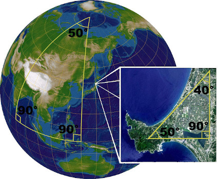

Spherical Geometry
Measuring Distances
Spherical Geometry is a particular case of Elliptic Geometry.
This section will cover how to measure distances on the surface of a sphere.
Let \(S = {x \in \mathbb{R}^3 ; \|x\| = 1}\) be a sphere of radius 1. (\(r=1\))
To measure the distance between two given points in the sphere, it does not suffice for us to draw a straight line between them.
The reason being that we are not allowed to go inside (or out) of the sphere, we can only "walk" on the surface of it.
That motivate us to create the following definition:
A Great Circle is the intersection of a plane and a sphere that passes through the center of that sphere.
We can define the distance between two points as the shorter arc in a great circle.
Let \(a\) and \(b\) be two distincts points in the sphere.
If \(r = 1\), and \(\theta\) is the angle between \(a\) and \(b\)
then \(dist(a,b) = r \text{ } \theta = \theta\), because \(r = 1\)
Concept of a Parallel
Now that we know how to get the shorter distance between two points in a sphere, we effectively know how to draw "straight lines" (albeit curved by the space they're within) and we can address the subject of the Fifth Postulate.
We should know from school that the Equator and any Meridians are perpendicular to one another.
The Equator and the Meridians also meet our definition of Great Circles.
By getting two points on the Equator from different Meridians we effectively have two right angles on both sides
of the Equator, so by the Fifth Postulate, those lines shouldn't meet.
However, that couldn't be further from the truth, because we also know that every Meridian meet at both Poles!
In fact, if we take both points we started with, and the intersection of the meridians, we've built a triangle that
has the sum of it's internal angles beyond 180 degrees!
This means that the concept of Parallels does not exist in Spherical Geometry (more generally, Elliptic Geometry).
Application on Globe
Consider the Earth to be a perfect sphere with radius \(R\) and center at the origin in \( \mathbb{R}^3 \).
We may suppose that the \(x\)-axis meet the Earth at the point with zero latitude and longitude and the \(z\)-axis passes through the north pole.
Thus, the point \( a \) with latitude \( \alpha \) and longitude \( \beta \) is given by the vector:
\( \vec a = R \text{ }(\cos \alpha \cdot \cos \beta, \text{ } \cos \alpha \cdot \sin \beta, \text{ } \sin \alpha) \)
With two points \(a\) and \(b\) on the surface, we should be able to measure their distance
If we know the angle \( \theta \) between them, then the distance is simply:
\( dist(a,b) = R \theta \) , when \( \theta \) is in radians
or \( dist(a,b) = R \displaystyle \frac{\theta \pi}{180} \) , if your angle is in degrees instead.